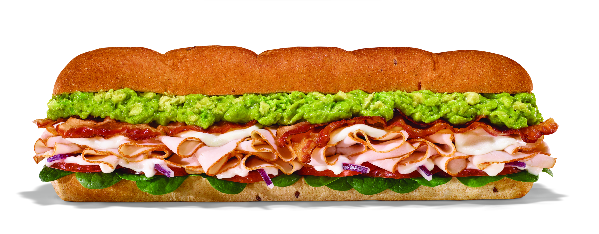

Featured

Turkey Bacon Sub
The Turkey Bacon Sub combines tender turkey, crispy bacon, melted cheese, and fresh veggies on a warm toasted roll. Each bite delivers a perfect balance of smoky, juicy, and crunchy flavors, making it a satisfying choice for lunch or dinner.

Everything Bagel Breakfast Sandwich
The Everything Bagel Breakfast Sandwich* features a freshly baked everything bagel filled with scrambled eggs, melted cheese, and your choice of bacon, sausage, or ham. It’s a hearty, flavorful breakfast that’s perfect with coffee or juice to start your morning.